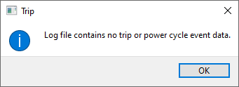

There are 2 ways to open a log file, i.e. either by using the application menu or by dragging a log file onto the application trip data pane.
Selecting the "File / Load log file" menu item will launch a file browser from where the log file can be selected and opened. Note that the application supports message logs (.csv) available at the server, as well as debuglog files downloaded from a controller.

From a file explorer or browser, drag and drop a log file onto the application trip data pane. The cursor will change to a drag cursor when over the application window if an acceptable file has been selected. Note that if you attempt to drag multiple log files at once into the application, only the first file will be loaded.
Dragging another log file on top of an already loaded one will unload the current log file before doing so.
On loading a log file the application checks to see if it contains any trips. If the log file does not contain any trips, i.e. no SIGON events, a message dialog will be displayed.
After dismissing the message dialog any previous trip data will have already been cleared, i.e. the Trip Data pane, the Trip Summary pane, and any charts will not contain any trip data.